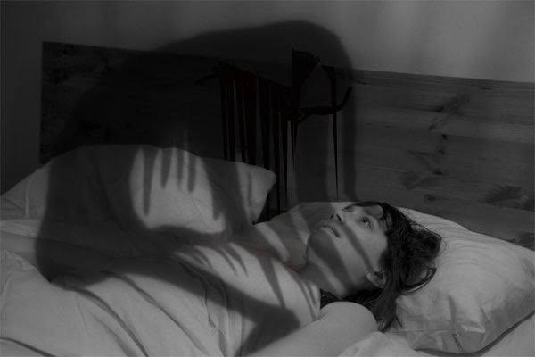

Folklore & Science
Hiện Tượng Bóng Đè
Nighttime Chest Pressure (Bóng Đè)
In Vietnamese folk culture, waking up unable to move while sensing a heavy chest pressure was known as Bóng Đè. While traditional tales attributed this to wandering night spirits, modern sleep science explains it as a temporary disconnect during REM sleep.